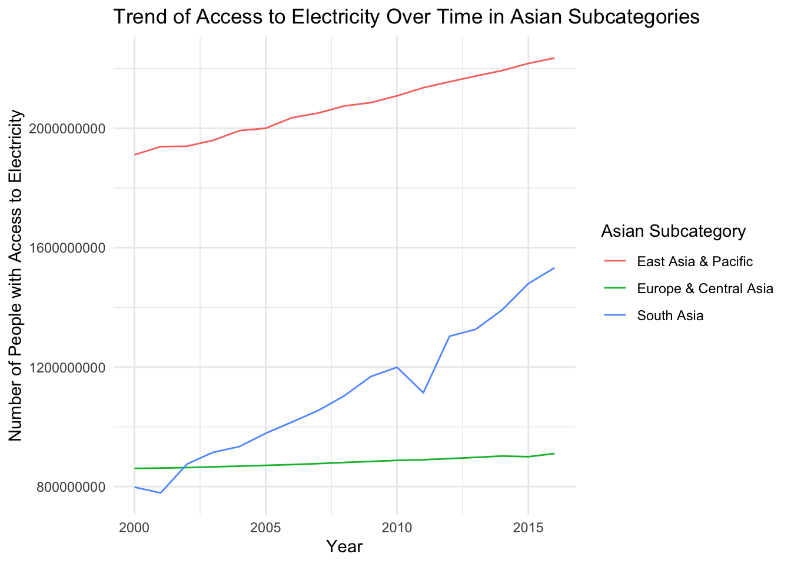
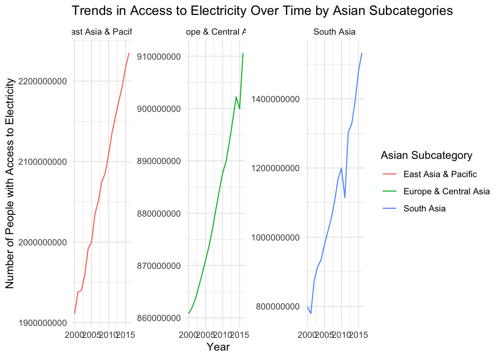
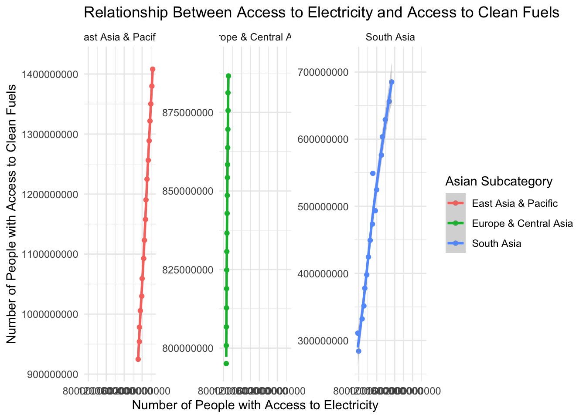
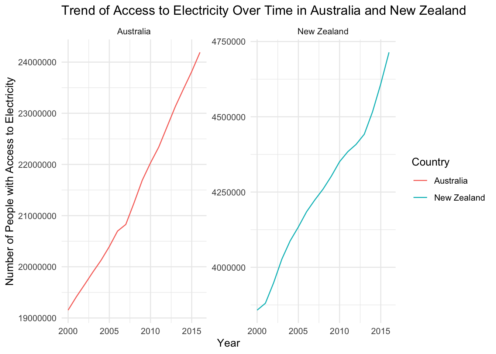
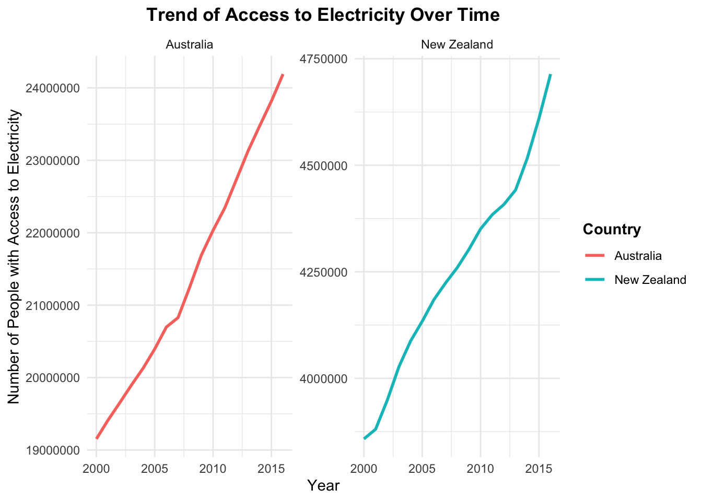

#Fix inconsistencies in the way the columns are named
cleaned_owid <- clean_names(owid_dataset)
#Rename columns for clarity
cleaned_owid <- cleaned_owid %>%
rename(
with_access_to_electricity = number_of_people_with_access_to_electricity,
no_access_to_electricity = number_of_people_without_access_to_electricity,
with_access_to_clean_fuels = number_with_clean_fuels_cooking,
no_access_to_clean_fuels = number_without_clean_fuels_cooking
)SOCS0100 First Assignment
1 Introduction
This report aims to explore and analyse a data set from Our World in Data (OWID), which compiled population statistics based on population percentages published from the World Bank and population estimates from the UN World Population Prospects. Specifically, this data set that explores the number of people with and without access to electricity and clean fuels for cooking. The report begins by detailing the data wrangling, cleaning, and processing steps followed by creating data visualisations to find any trends or patterns. This report finishes by critically engaging with whether ChatGPT was a helpful resource throughout the coding process.
2 Part I
2.1 Data set overview
As mentioned previously, this data is sourced from Our World in Data (OWID) and focuses specifically on access to electricity and clean fuels for cooking across various countries and regions. The rationale behind picking this particular data set is due to the significance energy access has for sustainable development. Negative outcomes have been associated with areas without reliable energy or clean cooking, such as poorer health outcomes due to harmful pollutants, lower educational attainment due to lack of lighting and resources, and slow economic growth due to limited productivity (Stern, Burke and Bruns, 2019 and Garba, 2021). From a social science perspective, studying these indicators from a global perspective, as the OWID data set allows us to do, provides insight into progress towards the United Nation’s Sustainable Development Goals (SDGs). Particularly, SDG7, which aims to ensure access to affordable, reliable, and modern energy for all (United Nations, 2015). Through analysis and visualisation, we can highlight disparities, and which areas or regions may need the most improvement.
2.2 Data exploration
To gain an initial understanding of the data set, the data was first viewed, and the GitHub page where this data was available was read to develop an understanding. The key variables in this data set as found are as follows:
- entity: The country or region name for each observation
- year: The year of the observation, spanning from 1990 to 2019
- Number of people with access to electricity: The absolute number of people globally, regionally or in a country with access to electricity
- Number of people without access to electricity: The absolute number of people globally, regionally or in a country without access to electricity
- number_with_clean_fuels_cooking: The absolute number of people with access to clean fuels for cooking and heating
- number_without_clean_fuels_cooking: The absolute number of people without access to clean fuels for cooking and heating
From viewing this data set, there is a standardisation issue when it comes to the naming of variables. To resolve this, we can use a function from the ‘janitor’ package to help fix inconsistencies, and also further rename columns for even more clarity.
From an initial exploration of data, we can see that there are only missing values (NAs) in number_with_clean_fuels_cooking and number_without_clean_fuels_cooking, with a 2661 in both. Through viewing the data set and identifying these missing values, we can see that these NAs correlate with data from 1990 to 1999, and 2017 to 2019. This issue does not apply to the other variables (number of people with and without access to electricity). This data should be removed to ensure applicability of analysis across all years.
#Summary statistics for each variable
summary(owid_dataset)
#Remove rows with missing values in columns
cleaned_owid <- na.omit(cleaned_owid)
#Confirm that missing values have been addressed
colSums(is.na(cleaned_owid))
#Remove 1990-1999 and 2017-2019 from the dataset due to NAs
cleaned_owid <- cleaned_owid %>%
filter(!(year >= 1990 & year <= 1999 | year >= 2017 & year <= 2019)) Entity Year Number.of.people.with.access.to.electricity
Length:6582 Min. :1990 Min. : 0
Class :character 1st Qu.:2000 1st Qu.: 623067
Mode :character Median :2007 Median : 5392424
Mean :2007 Mean : 199266382
3rd Qu.:2013 3rd Qu.: 45415305
Max. :2019 Max. :6912458804
Number.of.people.without.access.to.electricity number_with_clean_fuels_cooking
Min. : 0 Min. : 2032
1st Qu.: 0 1st Qu.: 491477
Median : 64779 Median : 5123887
Mean : 50197598 Mean : 158546598
3rd Qu.: 7782365 3rd Qu.: 47660953
Max. :1627944246 Max. :4405739095
NA's :2661
number_without_clean_fuels_cooking
Min. : 0
1st Qu.: 94237
Median : 1856185
Mean : 153680862
3rd Qu.: 19487483
Max. :3093769825
NA's :2661 entity year
0 0
with_access_to_electricity no_access_to_electricity
0 0
with_access_to_clean_fuels no_access_to_clean_fuels
0 0 Another issue found during the initial exploration of data is that the ‘entity’ variable has been collected such that it includes not just countries, but also geographic regions, economic groupings, and income groupings. For the sake of statistical analysis, these need to be removed to prevent bias. The years previously mentioned will be removed and the ‘entity’ variable will be cleaned to only include countries.
#Identify non-country entities
unique(cleaned_owid$entity)
#List of non-country entities
non_countries <- c(
"World", "Africa Eastern and Southern", "Africa Western and Central", "Arab World",
"Caribbean Small States", "Central Europe and the Baltics", "Early-demographic dividend",
"East Asia & Pacific", "East Asia & Pacific (excluding high income)", "East Asia & Pacific (IDA & IBRD)",
"Euro area", "Europe & Central Asia", "Europe & Central Asia (excluding high income)",
"Europe & Central Asia (IDA & IBRD)", "European Union", "Fragile and conflict affected situations",
"Heavily indebted poor countries (HIPC)", "High income", "IBRD only", "IDA & IBRD total",
"IDA blend", "IDA only", "IDA total", "Late-demographic dividend", "Latin America & Caribbean",
"Latin America & Caribbean (excluding high income)", "Latin America & Caribbean (IDA & IBRD)",
"Least developed countries: UN classification", "Low & middle income", "Low income",
"Lower middle income", "Middle East & North Africa", "Middle East & North Africa (excluding high income)",
"Middle East & North Africa (IDA & IBRD)", "Middle income", "North America",
"OECD members", "Other small states", "Pacific island small states", "Post-demographic dividend",
"Pre-demographic dividend", "Small states", "South Asia", "South Asia (IDA & IBRD)",
"Sub-Saharan Africa", "Sub-Saharan Africa (excluding high income)", "Sub-Saharan Africa (IDA & IBRD)",
"Upper middle income"
)
#Remove out non-country entities from the dataset
only_countries_owid <- subset(cleaned_owid, !(entity %in% non_countries))Once this cleaning has been conducted, we are left with data from only countries between the years 2000 and 2016. To analyse this, we can create a subset with only the mean and standard deviation of each variable, and present it in a table.
| Mean Access to Electricity | SD Access to Electricity | Mean No Access to Electricity | SD No Access to Electricity | Mean Access to Clean Fuels | SD Access to Clean Fuels | Mean No Access to Clean Fuels | SD No Access to Clean Fuels |
|---|---|---|---|---|---|---|---|
| 29584983 | 120803567 | 6307451 | 27358880 | 19701961 | 67260678 | 16190474 | 77538066 |
#Find mean and sd of the dataset, now that it is only countries and appropriate time frame
summary_stats <- only_countries_owid %>%
summarise(
with_access_to_electricity_mean = mean(with_access_to_electricity, na.rm = TRUE),
with_access_to_electricity_sd = sd(with_access_to_electricity, na.rm = TRUE),
no_access_to_electricity_mean = mean(no_access_to_electricity, na.rm = TRUE),
no_access_to_electricity_sd = sd(no_access_to_electricity, na.rm = TRUE),
with_access_to_clean_fuels_mean = mean(with_access_to_clean_fuels, na.rm = TRUE),
with_access_to_clean_fuels_sd = sd(with_access_to_clean_fuels, na.rm = TRUE),
no_access_to_clean_fuels_mean = mean(no_access_to_clean_fuels, na.rm = TRUE),
no_access_to_clean_fuels_sd = sd(no_access_to_clean_fuels, na.rm = TRUE)
)
#Make a table to show these summary stats in the report
summary_stats %>%
kable(
caption = "Summary Statistics of Access to Electricity and Clean Fuels",
col.names = c("Mean Access to Electricity", "SD Access to Electricity",
"Mean No Access to Electricity", "SD No Access to Electricity",
"Mean Access to Clean Fuels", "SD Access to Clean Fuels",
"Mean No Access to Clean Fuels", "SD No Access to Clean Fuels")
)The results of this analysis suggest that across all countries included in this data set, the average number of people with access to electricity in a country is 29,584,983. However, a standard deviation of 120,803,567 suggests a huge variation, with some countries achieving almost full access, and some still remaining far behind. An average of 6,307,451 in a country still do not have access to electricity, with a standard deviation of 27,358,880 further providing evidence for a hypothesis that substantial inequalities still exist between countries regarding electricity access. The same can be seen with access to clean fuels, as the mean values for access to (19,701,961) and no access to (16,190,474) cannot be analysed without their respective standard deviations of 67,260,678 and 77,538,066. These results suggest that whilst there are millions of people now have access to clean fuels for cooking, there are huge disparities that still exist and there are still millions of people without access to such necessities.
Since huge disparities still exist, this would be an important data set for policymakers to analyse for their respective regions of interest. An example use case could be seeing if certain policies have made an impact on increasing access rates. Hence, a function has been written to help subset data into only areas of interest, like I previously did manually to only include countries.
#Data wrangling function
#Create a function that easily subsets data by country
subset_by_area <- function(data, entity_column, area) {
subset_data <- subset(data, data[[entity_column]] %in% area)
return(subset_data)
}#Test usage
malaysia_subset <- subset_by_area(cleaned_owid, 'entity', 'Malaysia')
#Confirm output to ensure the function works
head(malaysia_subset) entity year with_access_to_electricity no_access_to_electricity
2129 Malaysia 2009 27540893 194145.266
2130 Malaysia 2010 28003893 204135.459
2131 Malaysia 2011 28516816 134146.186
2132 Malaysia 2012 29010053 58136.378
2133 Malaysia 2013 29446575 22348.106
2134 Malaysia 2014 29863129 3477.206
with_access_to_clean_fuels no_access_to_clean_fuels
2129 26744897 990140.9
2130 27212285 995743.4
2131 27665369 985593.1
2132 28085684 982504.8
2133 28434564 1034359.2
2134 28785435 1081171.13 Part II
3.1 Data visualisation and interpretation
Now that the data set has been appropriately cleaned and surface-level analysis has been conducted, we can start to visualise any relationships or trends. Since this data set is so big, I will only be focusing on the already pregrouped regions that include Asia - subset using the function I created in Part I.
#For the visualisation part, I am only going to focus on the Asian subcategories
#Use my function to create a subset with only Asian regions
asia_owid <- subset_by_area(cleaned_owid, 'entity', c("South Asia", "East Asia & Pacific", "Europe & Central Asia"))Due to the limited nature of this report, I will also be focusing mainly on access to electricity. The first visualisation will be a simple line plot as this would give a general idea of trends of access to electricity from 2000 to 2016.

#Visualisation 1
#Line plot for trend of access to electricity over time for Asian subcategories
ggplot(data = asia_owid, mapping = aes(x = year, y = with_access_to_electricity, color = entity)) +
geom_line() +
labs(
title = "Trend of Access to Electricity Over Time in Asian Subcategories",
x = "Year",
y = "Number of People with Access to Electricity",
color = "Asian Subcategory"
) +
theme_minimal()This plot shows a consistent upward trend for East Asia, the Pacific and South Asia. This may indicate strong infrastructure development and successful policy implementation in increasing electricity access. For Europe and Central Asia, the trend seems relatively flat, which may be due to countries in this region already having high electricity access rates by 2000. Whilst the red and green lines show a steady and linear line, the blue line has a rather concerning steep ‘dip’ in 2011. This sudden drop should be investigated further, and may be related to a natural disaster. One issue with this graphic is that the vast differences in population size affects the aspect ratio and skews perspective trying to view and understand the trends. Hence, we can visualise these same trends but with different y-axis scales.

#Visualisation 2
#Line plot for trends over time by region
ggplot(data = asia_owid, mapping = aes(x = year, y = with_access_to_electricity, color = entity)) +
geom_line() +
facet_wrap(~ entity, scales = "free_y") +
labs(
title = "Trends in Access to Electricity Over Time by Asian Subcategories",
x = "Year",
y = "Number of People with Access to Electricity",
color = "Asian Subcategory"
) +
theme_minimal()Whilst this iterative visualisation shows essentially the same information, as previously suspected, the change in y-axis allows us to see detail that was previously missed out. We can see that the green line is not as linear as previously expected, with a dip in access in 2015. Further investigation should be carried out for that time period to see what caused this.
Now that we can see the trend in access to electricity from 2000 to 2016, the third visualisation will be to see if there is a relationship between access to electricity and access to clean fuels using a scatter plot.
`geom_smooth()` using formula = 'y ~ s(x, bs = "cs")'
#Visualisation 3
ggplot(data = asia_owid,
mapping = aes(x = with_access_to_electricity, y = with_access_to_clean_fuels, color = entity)) +
geom_point() + geom_smooth(method = "gam") +
facet_wrap(~ entity, scales = "free_y") +
labs(
title = "Relationship Between Access to Electricity and Access to Clean Fuels",
x = "Number of People with Access to Electricity",
y = "Number of People with Access to Clean Fuels",
color = "Asian Subcategory"
) +
theme_minimal()`geom_smooth()` using formula = 'y ~ s(x, bs = "cs")'East Asia, the Pacific, Europe and Central Asia show a strong positive correlation suggesting uniform access to clean fuels at high levels of access to electricity. South Asia shows a slightly more dispersed trend, but still a positive correlation - suggesting that there may be more variability within the region in terms of access to both clean fuel and electricity.
From these three visualisations, I believe the second graphic best allowed comparisons between chosen areas and also allowed easy analysis. An easy-to-use function has been written up with the previous data-wrangling function in-mind to allow easy presentation of specific countries or regions of interest.
#Visualisation function
#Function to create a line plot for trend of access to electricity over time
create_line_plot <- function(data, x_var, y_var, color_var, title, x_label, y_label, legend_title) {
ggplot(data, aes_string(x = x_var, y = y_var, color = color_var)) +
geom_line() +
facet_wrap(~ entity, scales = "free_y") +
labs(
title = title,
x = x_label,
y = y_label,
color = legend_title # Set the legend title for the color aesthetic
) +
theme_minimal()
}
#Test function using previously made data wrangling function
#Subset first
aus_nz_subset <- subset_by_area(cleaned_owid, 'entity', c('Australia', 'New Zealand'))#Test visualisation function
create_line_plot( data = aus_nz_subset, x_var = "year", y_var = "with_access_to_electricity", color_var = "entity", title = "Trend of Access to Electricity Over Time in Australia and New Zealand", x_label = "Year", y_label = "Number of People with Access to Electricity", legend_title = "Country" )Warning: `aes_string()` was deprecated in ggplot2 3.0.0.
ℹ Please use tidy evaluation idioms with `aes()`.
ℹ See also `vignette("ggplot2-in-packages")` for more information.
Combining these two functions allows any user to quickly explore the data without extensive customisation each time. This helps increase efficiency, flexibility and is also reproducible.
3.2 Critical engagement with ChatGPT
ChatGPT was consulted throughout this assignment process, as required by the brief. ChatGPT was most useful in helping when running into errors when writing my code. For example, if I missed a small piece of syntax like a bracket or had named a variable slightly differently to how it was coded. However, despite this immense help, there were some limitations that prevented me from fully embracing ChatGPT as a collaborative tool. Whilst it was extremely useful in helping me fix ‘broken’ code, when asked to improve functions or help streamline my code, I found that it actually made my code more complicated and used functions beyond what I understood. With any code it ‘refined’, I had to spend more time understanding it for a result that would be extremely similar to what I already had. For me, this was most obvious when asking it to improve on my function.
#Data wrangling function
#Create a function that easily subsets data by country
subset_by_area <- function(data, entity_column, area) {
#Subset the data for the specified years
subset_data <- subset(data, data[[entity_column]] %in% area)
return(subset_data)
}#ChatGPT suggested improved function
filter_by_entity <- function(data, entity_column, entities, case_sensitive = TRUE) {
# Check if entity_column exists in data
if (!entity_column %in% colnames(data)) {
stop("The specified entity column does not exist in the data.")
}
# Check if entities is non-empty
if (length(entities) == 0) {
stop("The 'entities' vector is empty. Please provide one or more entities to filter.")
}
# Apply case sensitivity if required
if (!case_sensitive) {
data <- data %>%
filter(tolower(.data[[entity_column]]) %in% tolower(entities))
} else {
data <- data %>%
filter(.data[[entity_column]] %in% entities)
}
return(data)
}As seen above, the ChatGPT function takes into case sensitivity and checks for common issues while providing the user feedback. However, I do not feel that this would be approachable or friendly for a new user. The function that I created is much shorter and uses more basic functions, which would be easier to understand. The target user for this function (policy makers) are more likely to be proficient in politics, rather than coding, and hence, I believe that my function would be more accessible for their use cases.
How I feel regarding ChatGPT’s suggestions are applicable to my data visualisation function as well.
#Visualisation function
#Function to create a line plot for trend of access to electricity over time
create_line_plot <- function(data, x_var, y_var, color_var, title, x_label, y_label, legend_title) {
ggplot(data, aes_string(x = x_var, y = y_var, color = color_var)) +
geom_line() +
facet_wrap(~ entity, scales = "free_y") +
labs(
title = title,
x = x_label,
y = y_label,
color = legend_title # Set the legend title for the color aesthetic
) +
theme_minimal()
}#Test visualisation function
#Visualisation function
create_line_plot(
data = aus_nz_subset,
x_var = "year",
y_var = "with_access_to_electricity",
color_var = "entity",
title = "Trend of Access to Electricity Over Time in Australia and New Zealand",
x_label = "Year",
y_label = "Number of People with Access to Electricity",
legend_title = "Country"
)#ChatGPT improved function
# Enhanced function to create a line plot with facetting and customizable options
chatgpt_line_plot <- function(data, x_var, y_var, color_var, facet_var = NULL, title = "", x_label = "", y_label = "", legend_title = "", free_y_scales = FALSE) {
# Initialize the plot with data and aesthetic mappings
plot <- ggplot(data, aes_string(x = x_var, y = y_var, color = color_var)) +
geom_line(size = 1) + # Set line thickness for visibility
labs(
title = title,
x = x_label,
y = y_label,
color = legend_title # Set the legend title for the color aesthetic
) +
theme_minimal() +
theme(
plot.title = element_text(hjust = 0.5, face = "bold"), # Center-align and bold title
legend.title = element_text(face = "bold") # Bold legend title for emphasis
)
# Add faceting if a facet variable is provided
if (!is.null(facet_var)) {
plot <- plot + facet_wrap(as.formula(paste("~", facet_var)), scales = ifelse(free_y_scales, "free_y", "fixed"))
}
return(plot)
}#Test ChatGPT's line plot
chatgpt_line_plot(
data = aus_nz_subset,
x_var = "year",
y_var = "with_access_to_electricity",
color_var = "entity",
facet_var = "entity",
title = "Trend of Access to Electricity Over Time",
x_label = "Year",
y_label = "Number of People with Access to Electricity",
legend_title = "Country",
free_y_scales = TRUE
)Warning: Using `size` aesthetic for lines was deprecated in ggplot2 3.4.0.
ℹ Please use `linewidth` instead.
The ChatGPT code allows more flexibility and while the graph produced does look better, it is not enough to justify a longer and harder to understand piece of code. Due to the complexity of ChatGPT’s outputs, I mostly used it for troubleshooting, which was extremely useful and helped me find errors much quicker than if I had to do it myself. Furthermore, whenever I wouldn’t understand a specific part of code, ChatGPT would be able to easily explain it to me, which furthered my understanding and ability to code better.
4 Conclusion
In this report, we used the OWID data set to analyse access to electricity and clean fuels around the world. Through data wrangling, cleaning and visualisation, two functions have been created that I believe can streamline any future analysis and ensure reproducibility for anyone else who would like to conduct analysis using this data set. While collaborating with ChatGPT provided some support, its outputs often needed to be carefully addressed, as it was not always suitable for the assignment, or not understood by me. Nevertheless, this report aimed to produce analysis that could be easily followed and replicated. This report has been submitted in a folder with an R script that shows every step of the coding process that was not mentioned in this report, as well as a README file and the data set, to ensure accessibility and transparency in my methods.
5 References
Garba, I. (2021). Impacts of Inaccessibility to Clean Cooking Fuels: Global Versus Regional Perspective. Advances in Science, Technology & Innovation/Advances in science, technology & innovation, [online] pp.289–296. doi:https://doi.org/10.1007/978-3-030-74349-9_22.
Stern, D.I., Burke, P.J. and Bruns, S.B. (2019). The Impact of Electricity on Economic Development: A Macroeconomic Perspective. [online] Escholarship.org. Available at: https://escholarship.org/uc/item/7jb0015q [Accessed 9 Nov. 2024].
Un.org. (2015). THE 17 GOALS | Sustainable Development. [online] Available at: https://sdgs.un.org/goals [Accessed 9 Nov. 2024].
I acknowledge the use of ChatGPT (version 4o, https://chatgpt.com) to suggest improvements on my code as required by the assignment brief.